Positive
LabelIA 340: Data Mining, Modeling, and Knowledge Discovery in Databases
Week 11 · Let Tweets Speak
Large Language Models + Twitter Data
IA 340 · MONDAY · NOV 2
Let an LLM read the text.
From MongoDB queries to text analysis: sentiment, named people, translation, and summary.
“The bus arrived early!” 🙂
“I waited an hour.” 🙁
“What do the messages mean?” ?
Today: Understand the LLM → optional Google Sheets activity → Gemini API + MongoDB + Python hands-on.
01 · From numeric queries to text meaning
Previously, we used quantitative queries to count, filter, sort, and compare data: likes, hashtags, followers, and locations.
LLMs can also read text and generate new fields that we could not easily compute with an ordinary numeric query.
Structured or semi-structured output
Sentiment labels, a JSON list of names, or numeric values. Store and query them, then create charts or maps.
Unstructured output
Translation and summary. Read them beside the original messages, or use them in later analysis.
Same idea: Data in → analysis → output. An LLM adds meaning-based analysis to our existing database skills.
02 · What is a Large Language Model?
A Large Language Model (LLM) learns language patterns from large amounts of text. We provide a prompt and context; the model generates a response.
Prompt + context→Large language model→Response
Responses can be structured, semi-structured (such as JSON), or free text. Output format is something we can request in the prompt.
Important: The model does not automatically know what is in our MongoDB database, and its response is not automatically correct.
03 · One text, many outputs
ILLUSTRATIVE TWEET
“Maria Lopez praised City Transit’s new bus service.”["Maria Lopez"]
JSON list["City Transit"]
JSON listText in another language
Free textMaria likes the new bus service.
Free textLatitude and longitude
Structured fieldsThe same input can produce different results depending on the question. People and organizations may have several names, so a list is useful.
04 · Prompt = action + context + output format
Tell the model what to do, supply the text or data it should analyze, and specify the response format.
For this class, prompts should be short and clear. We will verify representative responses against the original tweets.
05 · Two easy ways to use an LLM
Inside an application
In an eligible Google Sheets account, =AI() can analyze a cell and put the answer back into the sheet.
Optional classroom activity.
Through a Python API
Colab sends a prompt to Gemini; Python receives the response, saves it to MongoDB, and creates visualizations.
Our main lecture and Lab workflow.
We will try the simple spreadsheet example first, then do the repeatable Python workflow together.
06 · Optional · Google Sheets sentiment demonstration
Optional classroom demo: Download the 10-row sample CSV, then import it into your own Google Sheet (File → Import → Upload). It has only two columns: Text Message and Location / Address.
When your Google account supports the function, =AI("Instruction", A2) sends the text of cell A2 to a model and inserts its response into the sheet. For example, you can ask for a sentiment label.
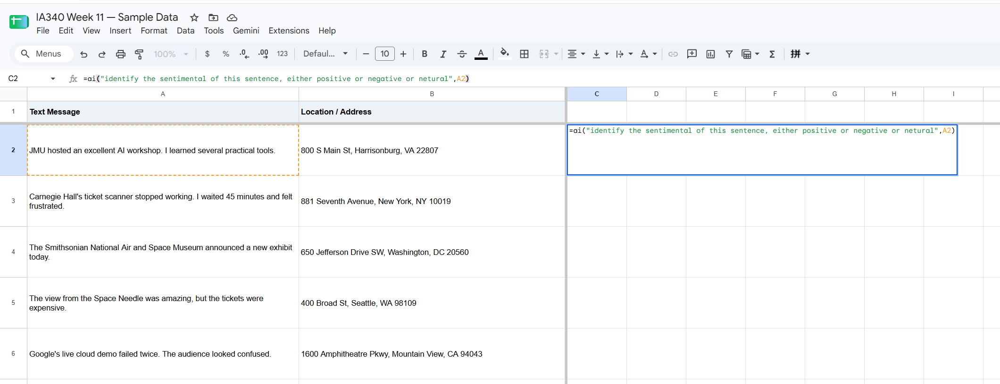
Google AI Pro and eligible Workspace accounts may have access; availability varies. If unavailable, just watch. No purchase, submission, or grade.
07 · Optional · extract latitude and longitude
The input may also be a place or address, not just a text message. Use the address in column B as context and ask the AI function to estimate one numeric coordinate.

Important: A generated coordinate is an approximation, not geocoding ground truth. It needs validation before geographic analysis.
08 · Optional · look at the generated results
After generating a few cells, inspect whether the output is consistent. Do all latitude values use the same decimal-degree format? Are there any values in degrees-minutes-seconds?
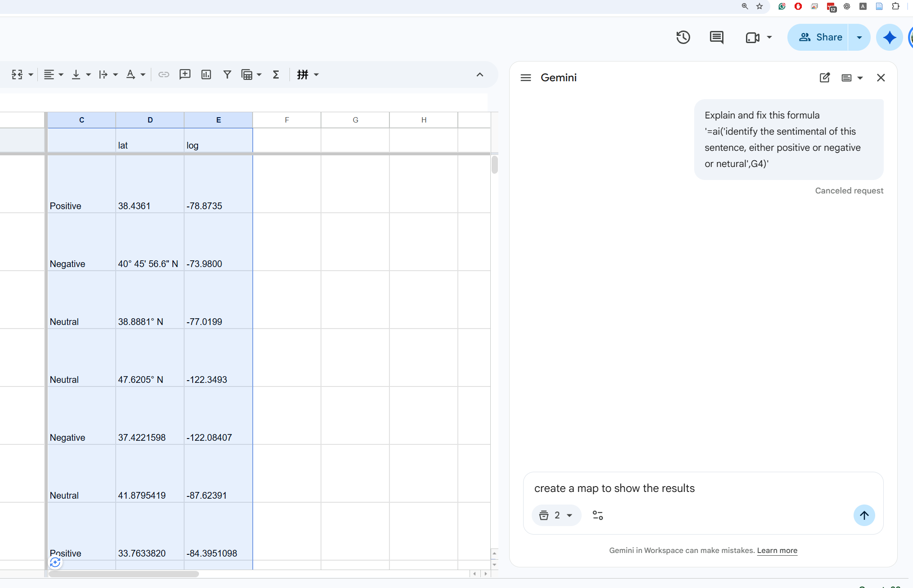
Discussion: A tidy spreadsheet does not guarantee accurate coordinates. Validate or convert inconsistent formats before mapping.
09 · Optional · Gemini-created geospatial map
Gemini can also use the spreadsheet’s analysis results to create a map-style visualization. This example is an AI-generated view of the ten sample places, colored by sentiment.
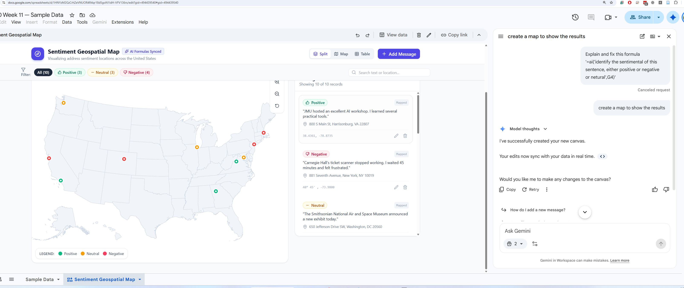
This demonstrates how structured output can support visualization. It is a Gemini-generated view, not a verified GIS map; inspect the addresses, coordinates, labels, and category counts before relying on it.
10 · What does the Gemini LLM API do?
An API (Application Programming Interface) lets Python send the prompt and context to Gemini, then receive the response.
Python—not Gemini—reads our MongoDB collection and decides what to write back to MongoDB.
11 · Our workflow: read, analyze, save, query, chart
We will use the same lab8.tweet_collection. No new Twitter collection or database is required.
12 · Model providers and model choices
Examples of LLM providers include Google (Gemini), OpenAI, Anthropic (Claude), and Moonshot AI (Kimi). Some models are hosted services; some releases offer downloadable weights under their licenses.
| What differs? | Why it matters |
|---|---|
| Reasoning and response quality | Harder tasks may need a stronger model. |
| Context / token limits | Longer text requires a model that can accept it. |
| Speed and API price | More capable models may be slower or more expensive. Check actual model pricing. |
Our course uses Gemini because of the Google teaching environment and available credits. Google AI Pro for Sheets and the Gemini LLM API have different access and billing arrangements.
13 · Google Cloud · Enable Agent Platform API
First, select the Google Cloud project you intend to use. In APIs & Services → Library, search for Agent Platform API, open its product page, and click Enable if it is not already enabled.
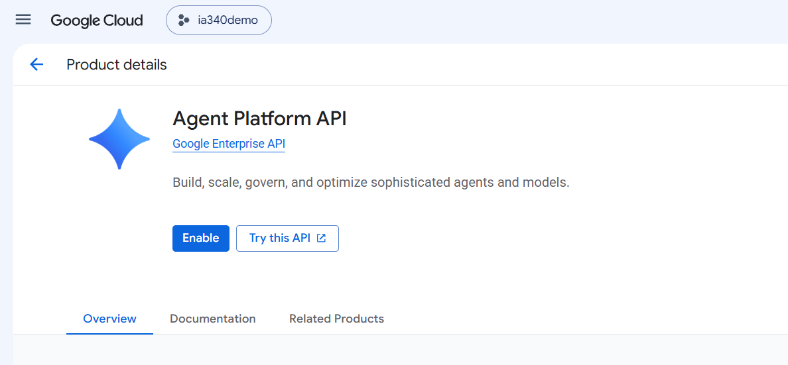
Use the Gemini Enterprise Agent Platform route shown here. The project must be permitted to use the service, subject to its quota and billing settings.
14 · Google Cloud · Open Agent Platform
After enabling the API, open Agent Platform in Google Cloud. For the classroom API-key workflow, locate Authenticate and choose the API Key setup option.
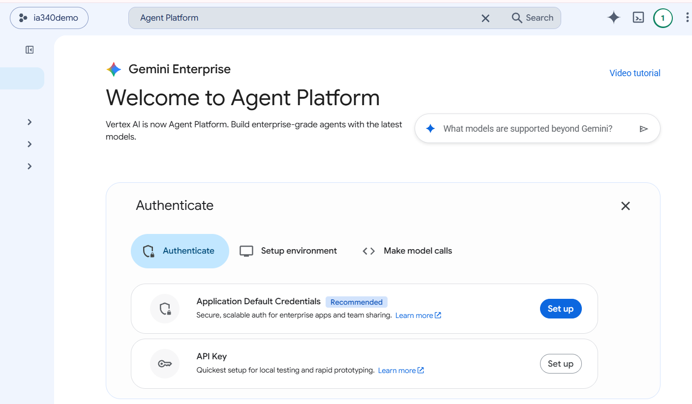
Google also offers Application Default Credentials for production use. For this Colab demonstration, follow the API-key path shown here.
15 · Google Cloud · Create your Agent Platform key
In the Agent Platform API-key setup screen, choose Create API Key. Copy the newly created key into your private Colab Secrets panel; do not put the key into Python cells, screenshots, or GitHub.

Check that your Cloud project, API access, and quota correspond to the key you created.
16 · Colab Secrets · GOOGLE_CLOUD_API_KEY
In Colab, open the Secrets panel (key icon), add these two secrets, and enable Notebook access for them:
GOOGLE_CLOUD_API_KEY— the Agent Platform API key you just created.MONGODB_CONNECTION_STRING— your existing MongoDB connection string.
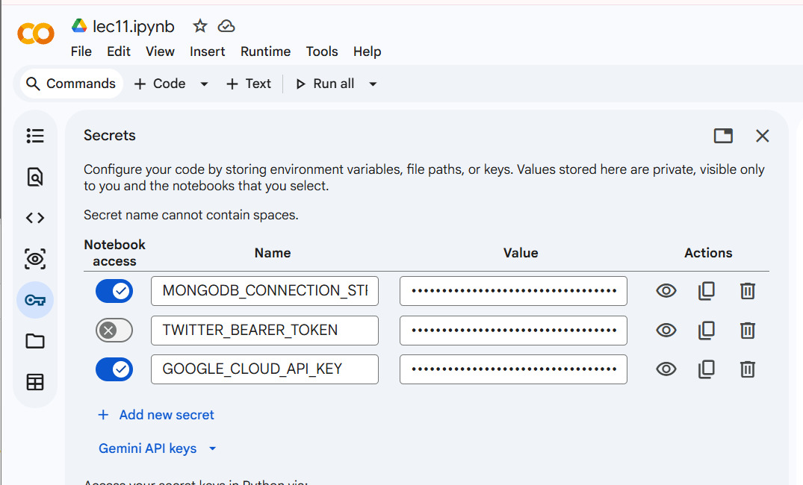
The Secret name must match the Python code exactly. Keep the value private. No GEMINI_API_KEY variable is used in this lecture.
17 · Install and import
Colab Cells 1–2. Install only the packages needed for the LLM and MongoDB connection. The code is the primary classroom example.
%pip -q install google-genai pymongo
from google.colab import userdata
from google import genai
from pymongo import MongoClient
import pandas as pd
import matplotlib.pyplot as plt
import json
from tqdm.auto import tqdm # Progress bar for long loops
Code explained — Python setup: %pip install: gets the Gemini and MongoDB packages. import: makes each library available; tqdm is the progress bar used in the later loops.
Verify the result against these instructor screenshots · click to enlarge
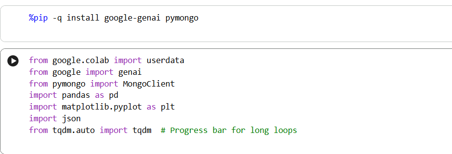
18 · Connect to Gemini and test one question
Colab Cell 3. The tested Enterprise client uses GOOGLE_CLOUD_API_KEY from Colab Secrets.
gemini = genai.Client(enterprise=True, api_key=userdata.get("GOOGLE_CLOUD_API_KEY"))
model = "gemini-3.5-flash-lite"
response = gemini.models.generate_content(
model=model,
contents="What is a large language model? Explain in one sentence."
)
print(response.text)
Code explained — Python calls the Gemini API: genai.Client(...): connects using the Cloud API key stored in Secrets. generate_content(): sends the question; response.text is the text returned by Gemini.
Verify the result against these instructor screenshots · click to enlarge
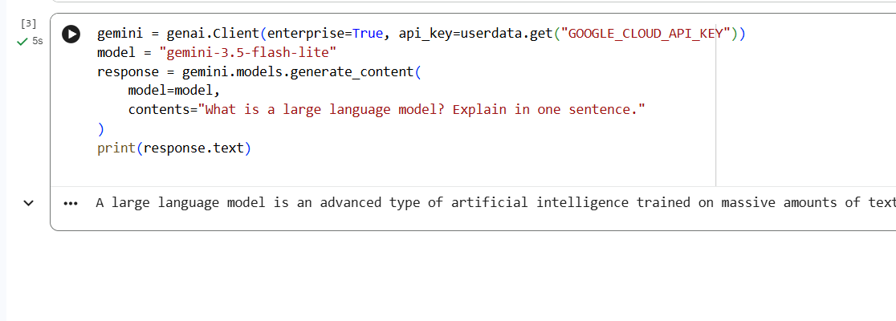
19 · Add tweet text as context
Colab Cell 4. Insert the text in the prompt with a simple Python f-string.
text = "The city launched new buses. Riders praise them but report delays."
prompt = f"What concern do riders report? Use only this text: {text}"
response = gemini.models.generate_content(model=model, contents=prompt)
print(response.text)
Code explained — Python builds a prompt: text: is the example context Gemini should read. prompt = f"...{text}": combines an instruction with that text; generate_content() asks Gemini to answer.
Verify the result against these instructor screenshots · click to enlarge
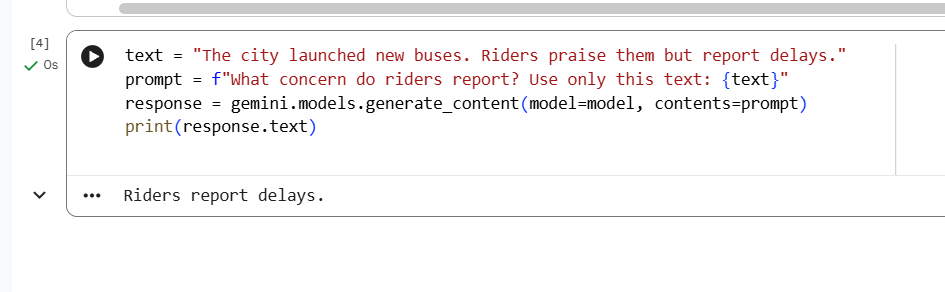
20 · Reuse one Gemini helper
Colab Cell 5. Plain-text tasks use gemini_help(prompt); People uses gemini_help(prompt, json_list=True) for a JSON list.
def gemini_help(prompt, json_list=False):
# Force a JSON list when extracting people; ordinary tasks return plain text.
config = {"response_mime_type": "application/json", "response_schema": list[str]} if json_list else None
response = gemini.models.generate_content(model=model, contents=prompt, config=config)
if not response.text:
raise ValueError("Gemini returned an empty response")
return response.text.strip()
Code explained — Reusable Python helper: def gemini_help(prompt): creates a shortcut for repeated Gemini API requests. json_list=True: requests a JSON list for People; other tasks return ordinary text; an empty response raises an error.
Verify the result against these instructor screenshots · click to enlarge

21 · Read Lab 8 tweets from MongoDB
Colab Cell 6. Use the existing MongoDB client and the familiar filter / project / find() workflow.
client = MongoClient(userdata.get("MONGODB_CONNECTION_STRING"))
tweet_collection = client["lab8"]["tweet_collection"]
filter = {}
project = {"tweet.id": 1, "tweet.text": 1, "_id": 0}
results = client["lab8"]["tweet_collection"].find(
filter=filter, projection=project
)
Code explained — Python reads MongoDB: filter = {}: requests all tweets; project selects the ID and text and excludes _id. find(): returns a MongoDB cursor, not a pandas table yet.
Verify the result against these instructor screenshots · click to enlarge
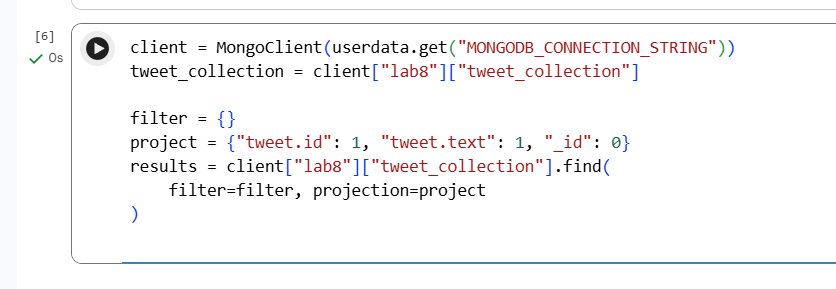
22 · Create tweet_data once
Colab Cell 7. Convert the cursor into records and keep tweet IDs and text in a reusable list.
records = list(results)
tweet_data = []
for record in records:
tweet_data.append({
"tweet_id": record["tweet"]["id"],
"tweet_text": record["tweet"]["text"]
})
print("Number of tweets:", len(tweet_data))
Code explained — Python prepares reusable data: list(results): reads the MongoDB cursor once into Python records. tweet_data.append(...): stores each tweet ID and text together, ready for the next three analyses.
Verify the result against these instructor screenshots · click to enlarge
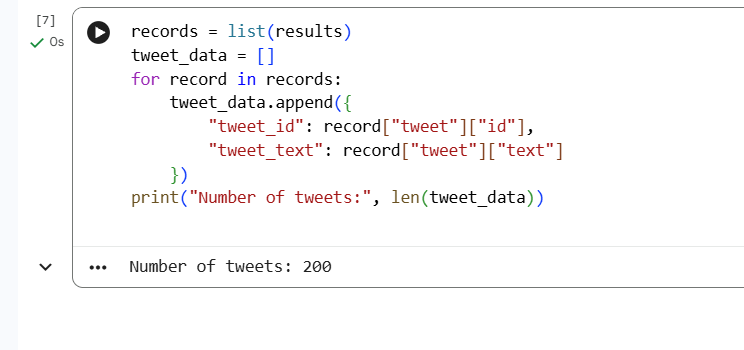
Remember: After list(results), the cursor has been consumed. Rerun the query cell if you need to fetch the records again.
23 · Sentiment analysis — run the full code
Colab Cell 8. Classify each tweet as Positive, Neutral, or Negative, then update tweet.sentiment in the same document. The progress bar shows completed iterations and try/except records failures.
for tweet in tqdm(tweet_data):
try:
prompt = f"Classify this tweet as Positive, Neutral, or Negative. Return only the label. Tweet: {tweet['tweet_text']}"
sentiment = gemini_help(prompt)
tweet_collection.update_one(
{"tweet.id": tweet["tweet_id"]},
{"$set": {"tweet.sentiment": sentiment}}
)
except Exception as e:
print(f"Skipped sentiment for tweet {tweet['tweet_id']}: {e}")
Code explained — Gemini analyzes; Python saves: tqdm(tweet_data): shows the number of tweets processed; no extra student input. prompt / gemini_help(): ask Gemini to classify the current tweet; $set writes tweet.sentiment. try/except: reports a failed tweet and continues without writing a false result.
Verify the result against these instructor screenshots · click to enlarge
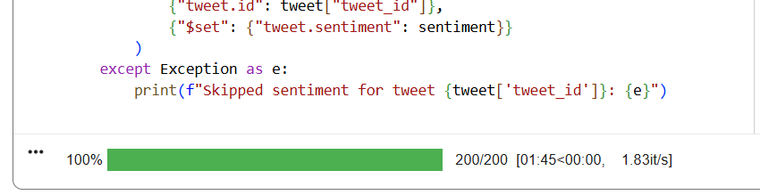
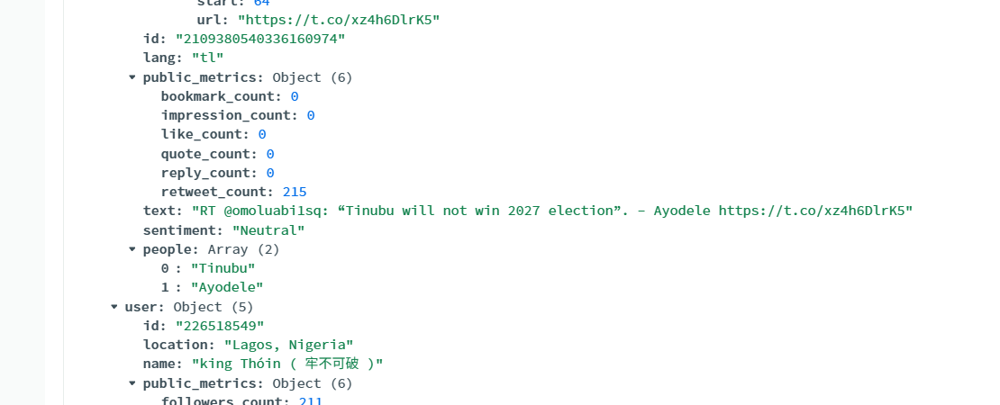
Check: A visible progress bar is not proof every write succeeded. Inspect messages and the new field in MongoDB.
24 · Extract people — save a JSON list
Colab Cell 9. People must be a list, for example ['Maria', 'Alex']; [] means the text has no named person. A parsing/API failure is reported and skipped.
for tweet in tqdm(tweet_data):
try:
prompt = f"Extract every person explicitly named in this tweet. Use [] when none. Tweet: {tweet['tweet_text']}"
people = json.loads(gemini_help(prompt, json_list=True))
tweet_collection.update_one(
{"tweet.id": tweet["tweet_id"]},
{"$set": {"tweet.people": people}}
)
except Exception as e:
print(f"Skipped people for tweet {tweet['tweet_id']}: {e}")
Code explained — Gemini returns a list; Python saves: prompt: asks for all person names in the current tweet, or an empty list. json.loads(): converts Gemini’s JSON text into a real Python list; $set saves tweet.people. except: skips a failed request rather than treating it as [].
Verify the result against these instructor screenshots · click to enlarge

25 · Translate tweets — save text
Colab Cell 10. You may choose any target language by changing language. The destination field remains tweet.translate.
language = "Chinese" # Change to any language you prefer.
for tweet in tqdm(tweet_data):
try:
prompt = f"Translate this tweet into {language}. Return only the translation. Tweet: {tweet['tweet_text']}"
translation = gemini_help(prompt)
tweet_collection.update_one(
{"tweet.id": tweet["tweet_id"]},
{"$set": {"tweet.translate": translation}}
)
except Exception as e:
print(f"Skipped translation for tweet {tweet['tweet_id']}: {e}")
Code explained — Gemini translates; Python saves: language: selects the translation language; the prompt includes that choice and tweet text. gemini_help() / $set: get the translated text and save it as tweet.translate.
Verify the result against these instructor screenshots · click to enlarge


26 · Summarize the whole dataset once
Colab Cell 11. Join the texts of all tweets and send one request. This is a corpus-level summary—not a separate summary for each tweet.
all_tweets = "\n".join(tweet["tweet_text"] for tweet in tweet_data)
prompt = f"""Summarize the main themes and patterns across all {len(tweet_data)} tweets
in about 150 words. Write ONE overall summary, not a summary of each tweet.
Tweets:
{all_tweets}"""
overall_summary = None
try:
overall_summary = gemini_help(prompt)
print(overall_summary)
except Exception as e:
print("Overall summary failed:", e)
Code explained — One prompt for the whole dataset: "\n".join(...): combines all tweet texts into a single context. prompt / gemini_help(): ask Gemini for ONE overall summary; print() displays it without copying it to every tweet.
Verify the result against these instructor screenshots · click to enlarge
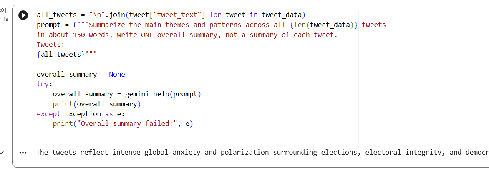
Review whether the summary reflects the full collection. Larger inputs must fit the selected model’s context window.
27 · Query in MongoDB → result → pandas
The same process as Lab 10: Generate your own query in MongoDB, inspect its output, export Python with Include Driver Syntax, run it to create result, and convert it to pandas.
MongoDB query→Export Python→result→df_posts→visualization
One reusable Colab cell works after each exported query:
records = list(result)
df_posts = pd.json_normalize(records)
display(df_posts)
Code explained — MongoDB export → Python DataFrame: MongoDB Atlas: generates the query; exporting with Driver Syntax produces Python result = .... list(result) / pd.json_normalize(): convert those returned records to df_posts; display() shows the table.
Verify the result against these instructor screenshots · click to enlarge
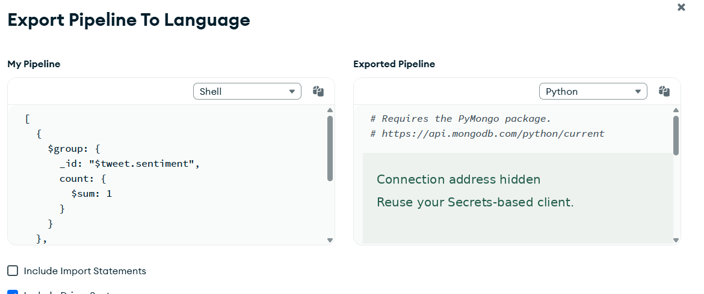
The query runs first. The DataFrame then displays the actual fields returned by that query; do not invent or hardcode column names.
28 · Sentiment — MongoDB aggregation code
Instructor-exported query. In Atlas, generate and run a query that counts the values of tweet.sentiment, then export Python. This is the actual code from the example notebook, not another backup query.
result = client['lab8']['tweet_collection'].aggregate([
{
'$group': {
'_id': '$tweet.sentiment',
'count': {
'$sum': 1
}
}
}, {
'$sort': {
'count': -1,
'_id': 1
}
}
])
Code explained — Query code generated in MongoDB Atlas: Natural-language request: “Count the value of different sentiments” generates a MongoDB aggregation. $group / $sum / $sort: count tweets per sentiment and sort the results; result holds the returned cursor.
Verify the result against these instructor screenshots · click to enlarge
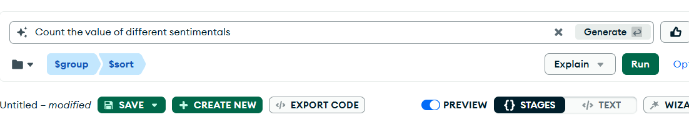
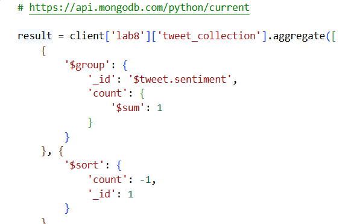
Instructor screenshot — MongoDB Atlas: a natural-language request generates the Sentiment pipeline.

29 · Sentiment — convert result into df_posts
Once the exported query has created result, run the same three-line DataFrame code:
records = list(result)
df_posts = pd.json_normalize(records)
display(df_posts)
Code explained — Python inspects MongoDB results: result: comes from the query on the previous page, not a new Gemini request. pd.json_normalize(records): creates df_posts with _id (sentiment) and count for the chart.
Verify the result against these instructor screenshots · click to enlarge
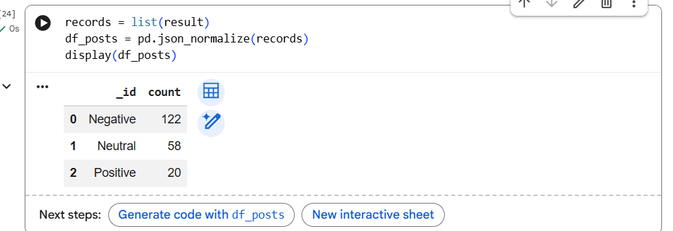
Check that df_posts has columns such as _id and count before asking Gemini to draw a chart.
Instructor screenshot — Gemini in Colab: prompt for a bar chart of df_posts (the generated code appears on the next page).

30 · Sentiment — chart code generated with Gemini
Ask Gemini in Colab to create a bar chart from the DataFrame you just displayed. The instructor’s working chart code is shown below; adapt it if your returned columns differ.
import seaborn as sns
import matplotlib.pyplot as plt
# Create a bar chart of the sentiment counts
plt.figure(figsize=(8, 5))
sns.barplot(x='_id', y='count', data=df_posts, palette='viridis', hue='_id', legend=False)
plt.title('Tweet Sentiment Distribution')
plt.xlabel('Sentiment')
plt.ylabel('Number of Tweets')
plt.grid(axis='y', linestyle='--', alpha=0.7)
plt.show()
Code explained — Chart code suggested by Gemini in Colab: Gemini in Colab: uses the displayed df_posts as context to suggest chart code. sns.barplot(...): draws sentiment labels (_id) against tweet totals (count); plt.show() displays it.
Verify the result against these instructor screenshots · click to enlarge

The bar heights should equal the counts returned by MongoDB. Verify the categories and totals.
31 · People — MongoDB aggregation code
Ask MongoDB to unwind tweet.people, group names, and count mentions. This is the actual exported code from the instructor notebook.
result = client['lab8']['tweet_collection'].aggregate([
{
'$unwind': '$tweet.people'
}, {
'$group': {
'_id': '$tweet.people',
'count': {
'$sum': 1
}
}
}, {
'$sort': {
'count': -1,
'_id': 1
}
}
])
Code explained — Query code generated in MongoDB Atlas: Natural-language request: “Count the value of different people in the tweet.people field” creates the pipeline. $unwind / $group / $sort: turn list items into names, count mentions, and rank the results.
Verify the result against these instructor screenshots · click to enlarge
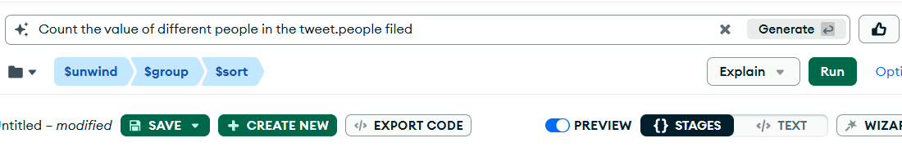
Instructor screenshot — MongoDB Atlas: a natural-language request generates the People pipeline.

32 · People — convert result into df_posts
Run the query above first, then reuse the exact same three-line conversion. df_posts may be reused after finishing the previous question.
records = list(result)
df_posts = pd.json_normalize(records)
display(df_posts)
Code explained — Python inspects MongoDB results: list(result): collects the people-query results. df_posts: shows names in _id and their mention counts in count.
Verify the result against these instructor screenshots · click to enlarge

33 · People — chart code generated with Gemini
Ask Gemini in Colab for a horizontal bar chart of the most-mentioned people. Compare its suggested code and plot with the instructor example below.
import seaborn as sns
import matplotlib.pyplot as plt
# Filter the top 10 most frequently mentioned people for clarity
top_people = df_posts.head(10)
plt.figure(figsize=(12, 6))
sns.barplot(x='count', y='_id', data=top_people, palette='mako', hue='_id', legend=False)
plt.title('Top 10 Most Frequently Mentioned People')
plt.xlabel('Mention Count')
plt.ylabel('Person Name / Handle')
plt.grid(axis='x', linestyle='--', alpha=0.7)
plt.show()
Code explained — Chart code suggested by Gemini in Colab: df_posts.head(10): keeps the ten highest-ranked people. sns.barplot(x="count", y="_id", ...): makes a horizontal comparison; the result must match MongoDB counts.
Verify the result against these instructor screenshots · click to enlarge

A single tweet can mention several people, so total mentions may exceed the number of tweets.
34 · Translations — MongoDB aggregation code
Use MongoDB to return the ten most-liked tweets and their saved translations. Read the text output as a table, rather than counting translation strings.
result = client['lab8']['tweet_collection'].aggregate([
{
'$sort': {
'tweet.public_metrics.like_count': -1
}
}, {
'$limit': 10
}, {
'$project': {
'_id': 0,
'tweet.public_metrics.like_count': 1,
'tweet.translate': 1
}
}
])
Code explained — Query code generated in MongoDB Atlas: Natural-language request: “Show the translation of the tweets with the top 10 most likes”. $sort / $limit / $project: choose the most-liked tweets and return only requested fields.
Verify the result against these instructor screenshots · click to enlarge
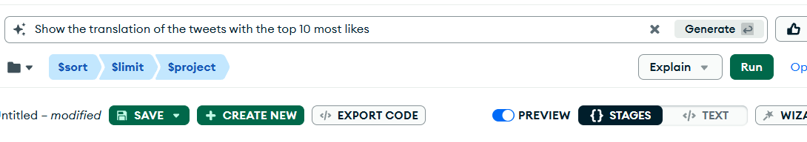
Instructor screenshot — MongoDB Atlas: a natural-language request generates the Translation query.

35 · Translations — display as a pandas table
Run the exported translation query to produce result. Then display the DataFrame:
records = list(result)
df_posts = pd.json_normalize(records)
display(df_posts)
Code explained — Python displays free-text results: result: contains the exported MongoDB query’s rows. pd.json_normalize / display: put the saved translations and like counts into a table; no bar chart is needed.
Verify the result against these instructor screenshots · click to enlarge

No bar chart is needed for individual translations. Check the meaning against the original text.
36 · Wednesday Lab — repeat with new fields
Use your own completed lec11.ipynb as the reference. Keep its setup and processing structure, but write your own prompts, query, chart code and explanations.
| Monday Lecture (complete code) | Wednesday Lab (your code) |
|---|---|
Sentiment → tweet.sentiment |
Anger → tweet.anger |
People list → tweet.people |
Organizations list → tweet.organizations |
MongoDB result → df_posts → chart |
Repeat for the two new fields |
Lab requires two analyses, two queries, two DataFrames and two charts, plus your Summary and AI Use. No new tweets, no profile-location task and no mandatory Sheets activity.
37 · Finish and save your Colab notebooks
Your lec11.ipynb should contain the three saved LLM analysis fields (sentiment, people, translate), one overall dataset summary, the executed MongoDB queries, two charts and a translation table. Inspect any failed API calls and keep credentials in Secrets.
Your lab11.ipynb should adapt the same process to anger and organizations, with query results, charts and your own findings.
client.close()
Code explained — Close the database connection: client.close(): ends the MongoDB connection after you finish reviewing and saving your notebook.
Lecture: 40 points · Lab: 60 points. The optional Google Sheets demonstration is not graded. See the separate Lab 11 assignment for the complete requirements.